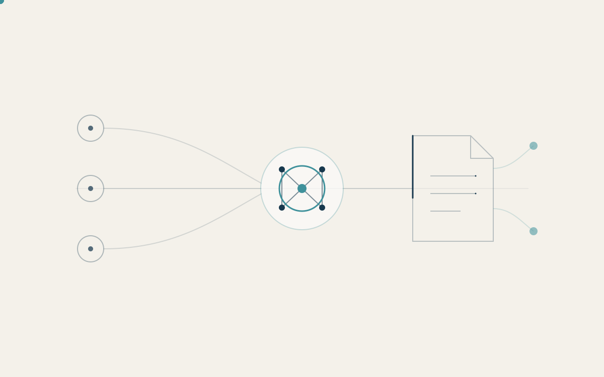
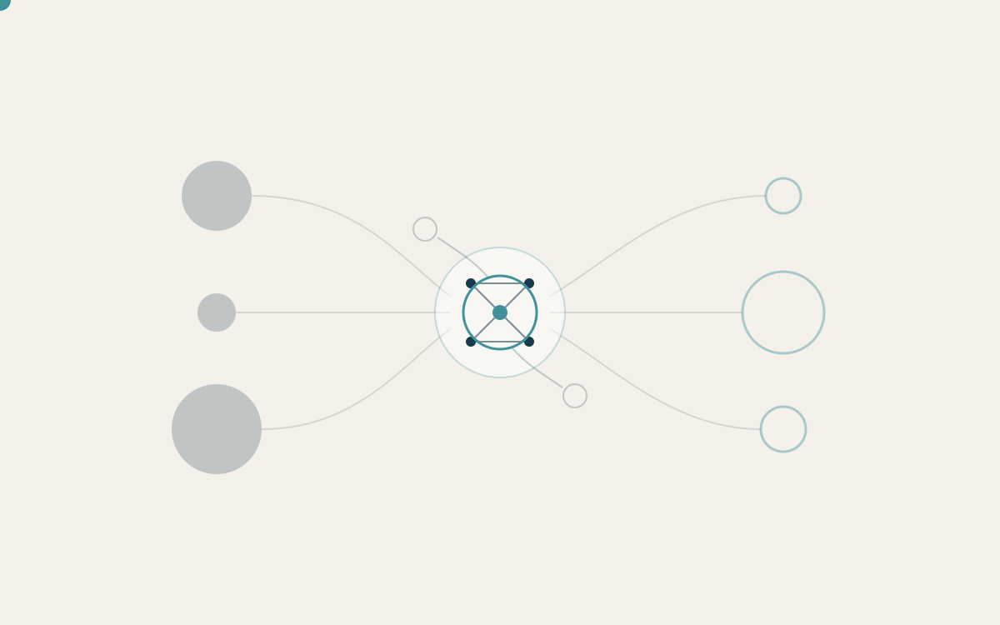
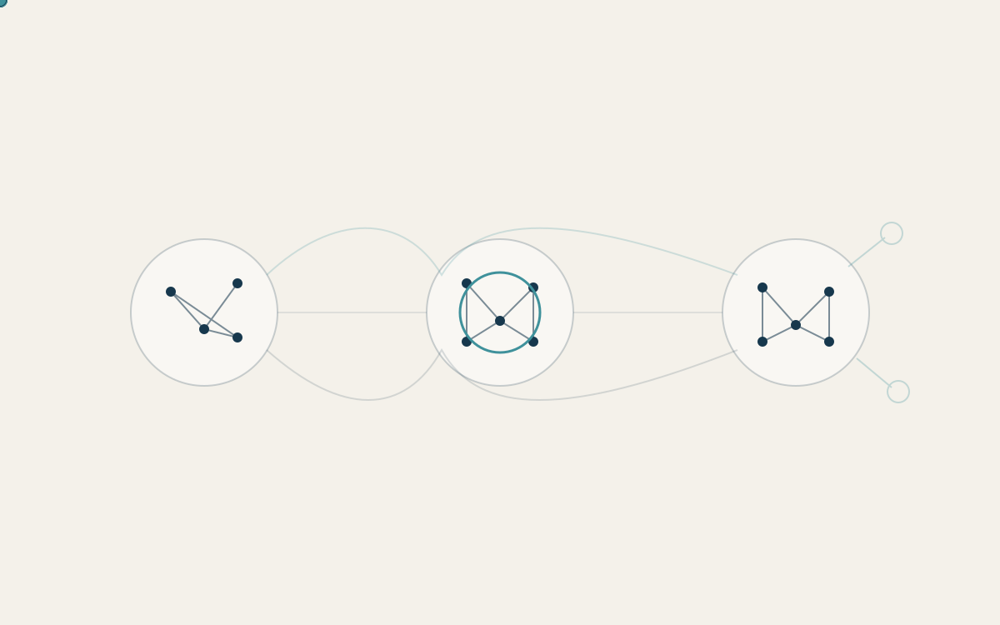

Science, Innovation & Knowledge production
I examine the academic division of labor in scientific teams, the allocation of scientific credit and recognition, and the evolution of intellectual and career trajectories.
Science of science · Innovation · Computational social science
Hi, I am a PhD Fellow in Sociology at the University of Copenhagen, fortunate to be advised by Prof. Mathias W. Nielsen and Prof. Andrew C. Herman. Science underpins innovation and socio-economic development, yet the production and recognition of scientific knowledge remain globally unequal. I study how scientific knowledge is produced, evaluated, and diffused within this stratified system, aiming to identify the underlying mechanisms that sustain global scientific disparities.
02 / News
Our work Should I stay or should I go? Fairness as a structural condition in collaboration persistence was presented as a plenary talk at CS2Nordics 2026. 🎉
Began a research visit at the Knowledge Lab at the University of Chicago.
My new study Who did what? A TF-IDF-based contribution metric for team science is now available in the Journal of Informetrics. 🎉
03 / Research
Broadly, I am interested in using computational approaches to analyze large-scale data and study patterns in science, innovation, and knowledge production.

I examine the academic division of labor in scientific teams, the allocation of scientific credit and recognition, and the evolution of intellectual and career trajectories.

I examine how scientific attention and research funding are distributed across countries and disease areas, focusing on agenda setting in North-South collaborations, development of national research specializations, and the correspondence between research activity and local health needs.

I examine how research collaboration (co-authorship, co-invention) and cross-border economic linkages (e.g., FDI, GVCs) facilitate knowledge flows across firms, industries, and regions, shaping the geography of innovation.
Research toolkit
04 / Publications
Work spanning team science, resource networks, and global value chains.
Download complete publication list2026
2024
2024
2022
2022
05 / Conferences
Selected presentations in science, innovation, and network research.
2026
2026
2025
2025
2025
06 / Teaching
Teaching experience in computational and multivariate analysis.
2025-2026
Teaching Assistant · University of Copenhagen
Course topics
07 / Collaborators
08 / Contact
Department of Sociology
University of Copenhagen
Øster Farimagsgade 5
1353 Copenhagen, Denmark